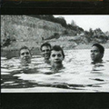

Slint is and was an exciting new development in the post-rock style that is now again revitalizing the rock music scene. Their first album Spiderland from 1991 has been unavailable in vinyl for years. We've had it reproduced. True stuff. Also, we tracked down the band and made them sign album covers. So we have signed copies, but only for the first 20 customers – so hurry and get yours today! >> Go to shop |
 |